| 項目 | 内容 |
|---|---|
| 実行日 | 2026-06-27 |
| 対象 | Android ビルド（dist-android＝APK と同一アセット）を Android モード（__ANDROID_APP__=true）で配信 |
| 手段 | Playwright Chromium / Pixel5 相当（393×851, dpr2）。python -m http.server dist-android で high-low.html を配信し全メニュー操作＋1ラウンド実プレイ。外部リンク(app-flux系)は遮断し「Flutter が外部で開く」前提（遮断＝実機では成功）。 |
| APK 検証 | package com.game.highandlow / AdMob ~5328478756 / 修正バンドル同梱を unzip で確認済 |
buildGameAssetUrl/loadAppConfig を使わず独自解決器を持ち、その Android 分岐が旧 ./assets/... のまま＝ページ /assets/high-low.html 基準で /assets/assets/... の二重 assets で 全404。config・BGM・カード画像が読めず無音＆無反応（設定/広告削除は config 不要なので反応）。
high-low-config.ts / high-low-assets.ts の Android 専用分岐を削除し、共通と同じ base 相対 ${BASE_URL}web-games/game-assets/... に統一（Android base ./ で /assets/web-games/game-assets/... に解決）。WEB 分岐は不変。→ レンダーで START/ガイド/カード/BGM すべて 0×404 を確認（下表 C 群）。
menu-news/menu-other-games イベントを発火するだけだが、high-low 独自 standalone はこのハンドラとモーダルが丸ごと欠落（共通 standalone は onNews/onOtherGames＋モーダルを持つ）。
news-info-modal-panel / other-games-modal-panel を high-low に配線（@menu-news/@menu-other-games＋state＋card-games-list.json 取得＋android back）。コピペでなく共有部品の再利用＝old-maid と同一UX。→ 両モーダルが開くことをレンダーで確認（下表 B 群）。
| NO | 対象 | 操作 | 期待 | 結果（根拠） | 判定 | 証跡 |
|---|---|---|---|---|---|---|
| B-01 | メニュー描画 | 起動 | Android 項目含めメニュー表示 | タイトル「Classic Simple High & Low」/COIN/Ver/START/ガイド/設定/Remove Ads/Other Card Games/News 表示。初回は Initial Settings(言語) も表示。 | OK | 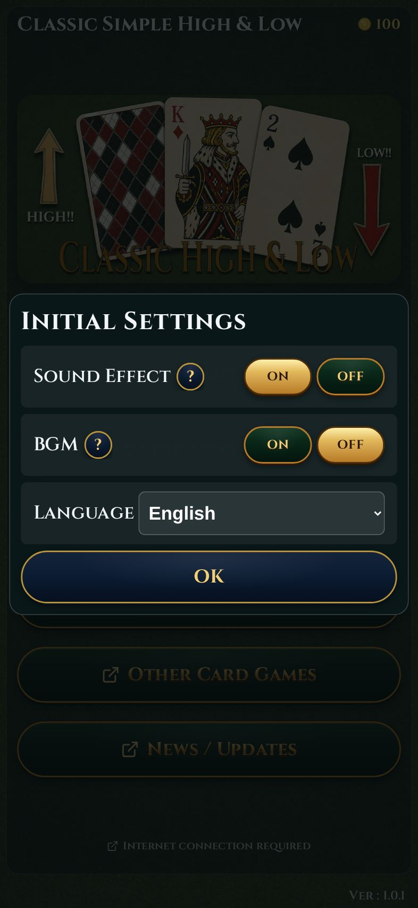 |
| B-03 | ガイド | Guide/Overview | ガイドパネルが開く | guide-overview-panel 表示。err/404=0。 | OK | 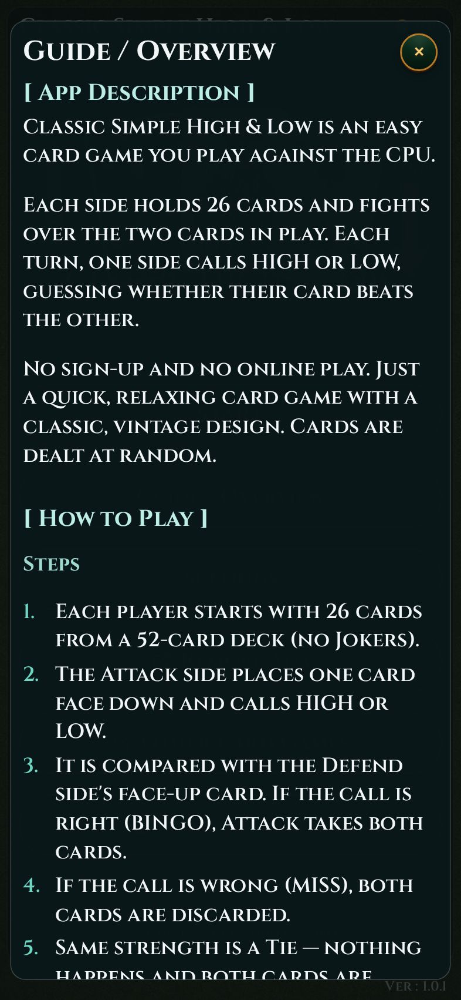 |
| B-06 | 設定 | Settings | 設定モーダル | Settings（Sound Effect/BGM/Clear Cache/Language/OK）表示。err/404=0。 | OK | 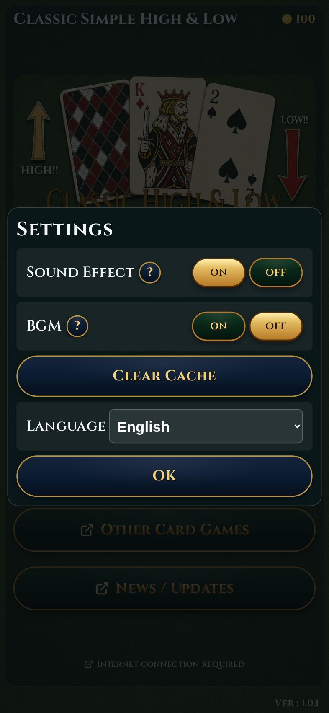 |
| E-01 | Remove Ads | Remove Ads | 課金ダイアログ | remove-ads-dialog-panel 表示。err/404=0。（実購入は実機・下記未実施） | OK | 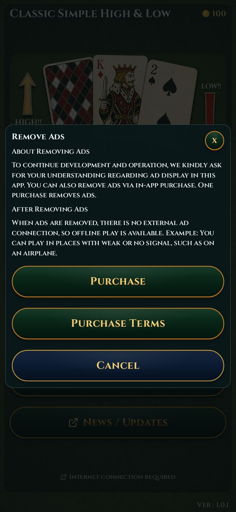 |
| B-05a | 別のカードゲーム | Other Card Games | 一覧モーダル（旧:無反応） | 修正後 OK＝other-games-modal-panel が開き、バンドル card-games-list.json から Blackjack/Poker/3in1 等を一覧表示＋Google Play ボタン。feat 画像はレンダー時のみ外部遮断で欠（実機はライブ/バンドルから取得）。 | OK | 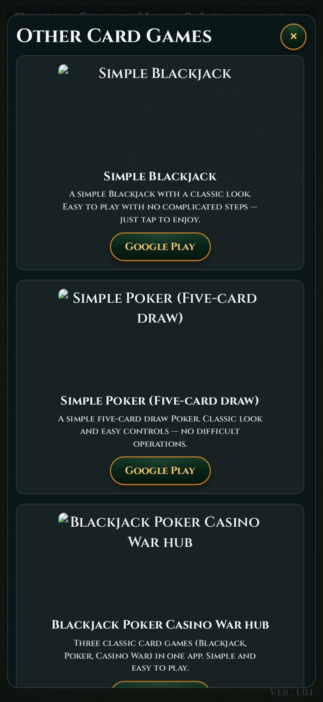 |
| B-05b | お知らせ更新 | News / Updates | お知らせモーダル（旧:無反応） | 修正後 OK＝news-info-modal-panel（About this app/Back）表示。「最新版を確認」は store_state=comingsoon で play_store_url 空のため非表示＝共通版と同じ正挙動。 | OK | 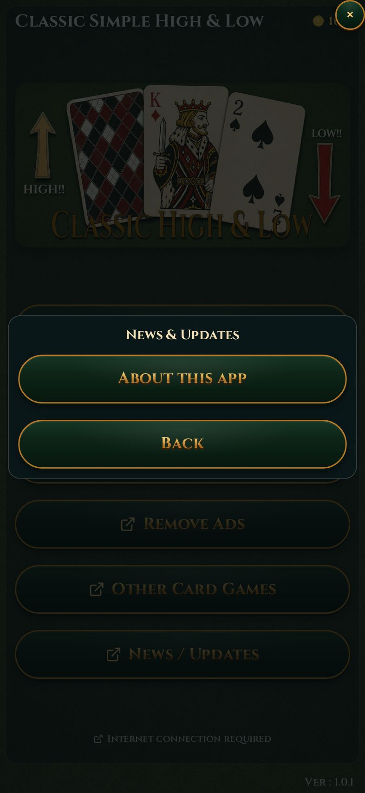 |
| C-01 | ゲーム開始 | START→ルールOK→デッキ選択NEXT→BET START | 盤面表示・カード描画 | HIGH/LOW 盤面（CPU Defend、J♣、デッキ枚数24/24、HIGH/LOW、PLAYER Attack）。カード画像読込OK・err/404=0。COIN/BET/Round 表示。 | OK | 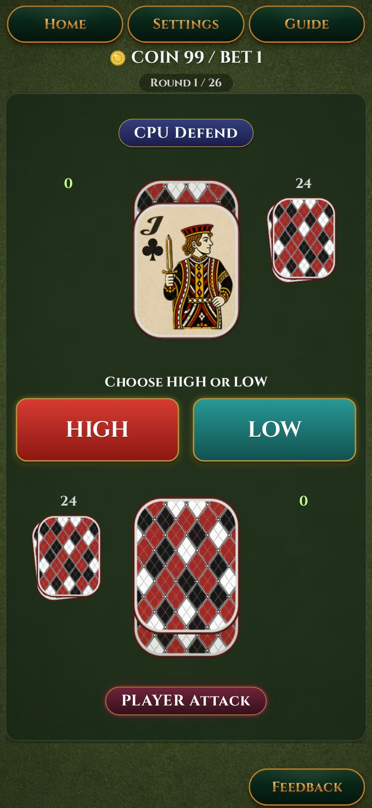 |
| C-02 | HIGH/LOW 操作 | HIGH をタップ | 判定・結果バナー | 「HIGH!」バナー＋プレイヤー札(Q♥)公開。1ラウンド成立。err/404=0。（勝敗ロジック詳細は §1.3 対象外） | OK | 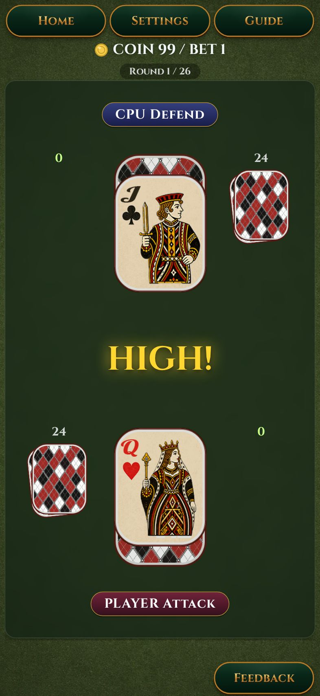 |
| C-rules | ルール説明 | START 直後 | ルールダイアログ | 「Select Mode」ルール（Attack/Defend, BINGO/MISS）＋OK＋次回非表示。 | OK | 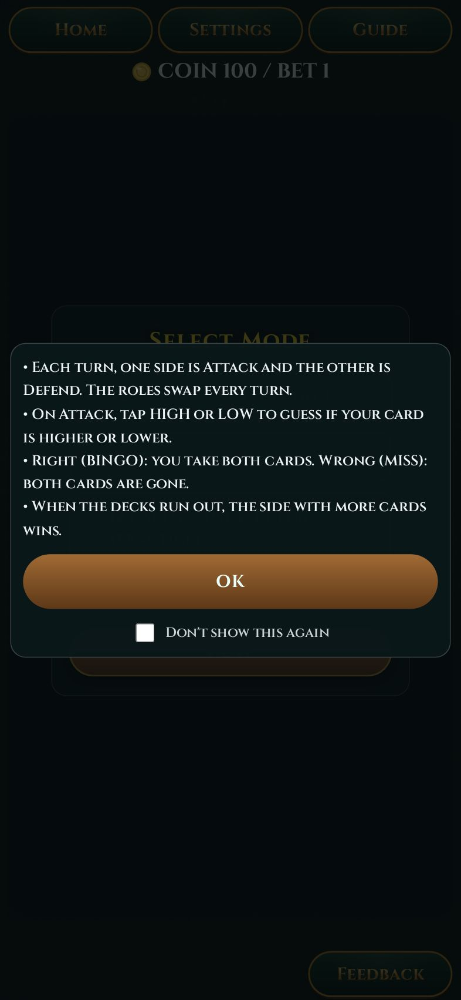 |
| NO | 対象 | 未実施理由 | 判定 |
|---|---|---|---|
| A-02 | Android8 ステータスバー（水色化しない・黒＋白アイコン） | Flutter ネイティブ描画＝WebView レンダー対象外。実機要。 | 未実施 |
| A-03 | recents にアプリ名「Classic Simple High & Low」 | OS タスク切替＝実機要。 | 未実施 |
| A-05 | ランチャーアイコン表示（マスク欠けなし） | ランチャー＝実機要（生成物のマスク確認は別途実施済の静止画のみ）。 | 未実施 |
| D-01〜04 | AdMob 本番ID＋テストデバイスでテスト広告 | AdMob SDK＝実機要。 | 未実施 |
| E-02〜04 | 実購入/復元/DEBUG consume | Google Play Billing＝実機・テストアカウント要。 | 未実施 |
| F-01/02 | システムバック（モーダル閉じ／終了） | Flutter PopScope＝実機要（web 側 __HIGHANDLOW_APP__.onAndroidBack は実装確認済）。 | 未実施 |
| F-04 | 操作ボタン≥88px・8の倍数を WebView 実機で目視 | 実機 DPI 基準で要再確認。 | 未実施 |
| NO | 対象 | 操作 | 期待結果 | 確証（on-screen 実測 px @360×800） | 判定 | 証跡 |
|---|---|---|---|---|---|---|
| UI-G1 | gameover ボタン（Play Again / Home） | 練習モード完走→結果画面 | 操作ボタン on-screen ≥88px・上下を使い切る・文字大 | 316×91px（≥88 達成）。winner-txt 35px。gameover-screen 348×642 で space-evenly＝上下余白を使い切り豆粒解消。overflow なし。 | OK | 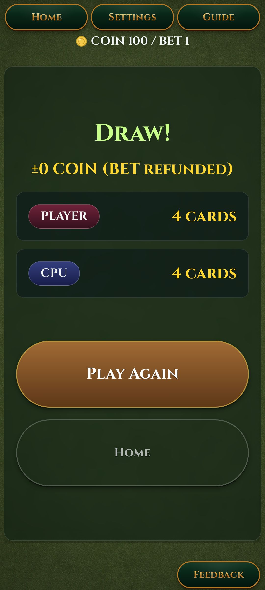 |
| UI-G2 | 盤面 HIGH/LOW ボタン（再拡大しない） | 盤面表示 | 以前修正済の 92px を維持（過拡大しない） | .btn-hl=stage 92px → on-screen 158×61px。ユーザー指示により元サイズ維持（128pxへの再拡大を撤回）。 | OK | 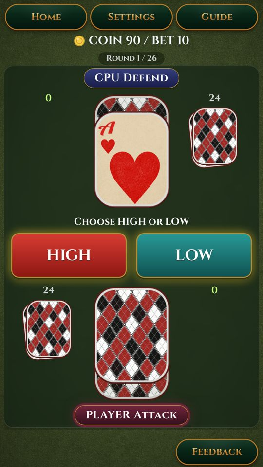 |
| UI-G3 | 再ビルド反映 | build:android→sync→flutter build apk --debug | 修正が APK に反映 | app-debug.apk 再生成（EXIT 0）。assets 同期済（平坦化・www無）。INFO 36枚も 92px 盤面で再生成・全 1080×1920。 | OK | — |